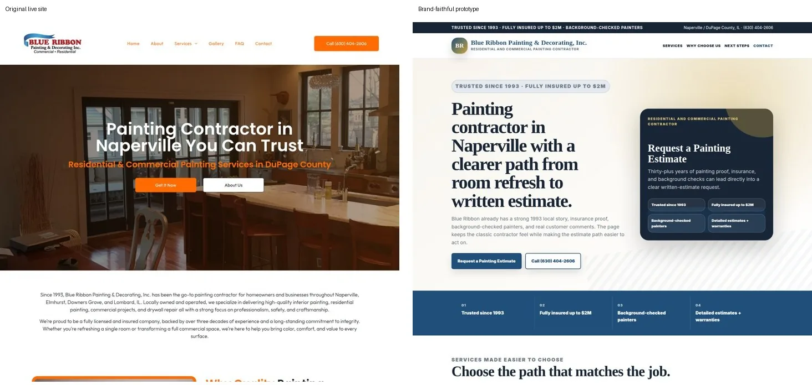
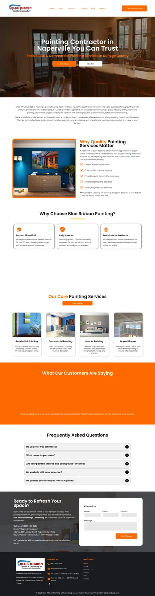
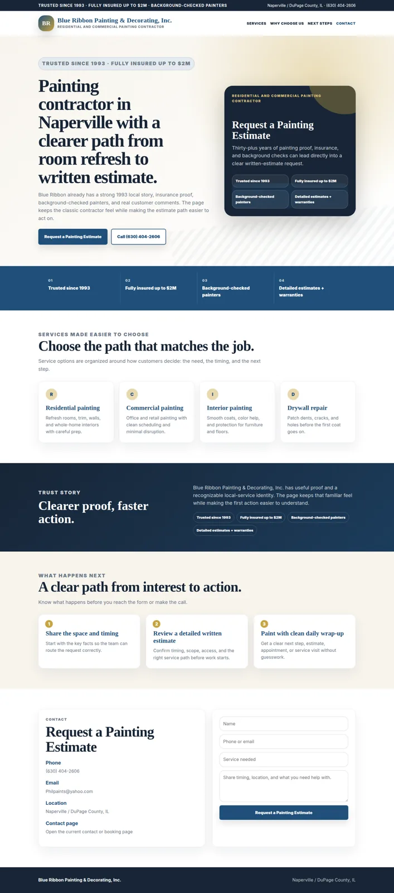

Blue Ribbon Painting & Decorating
Same business? YESReal logo, hero image, orange/blue palette, dense white header/nav rhythm, and local painting-service copy preserved.
Clearly better? YESSpecific estimate CTA, top trust proof, cleaner service cards, and a three-step estimate path are visible quickly.



Upgrade notes
- Kept the real logo and live hero/section imagery instead of substituting a generic painting layout.
- Changed vague “Get It Now” conversion path into “Request a Painting Estimate.”
- Moved since-1993, insured, background-checked, and free-estimate proof into the first-screen trust strip.
- Added project-specific service paths and a concise “What Happens Next” estimate flow.